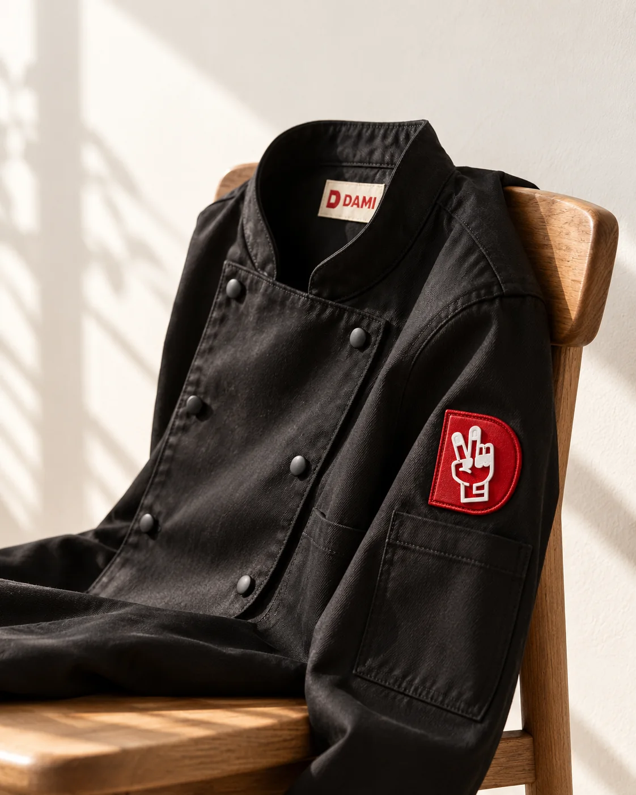
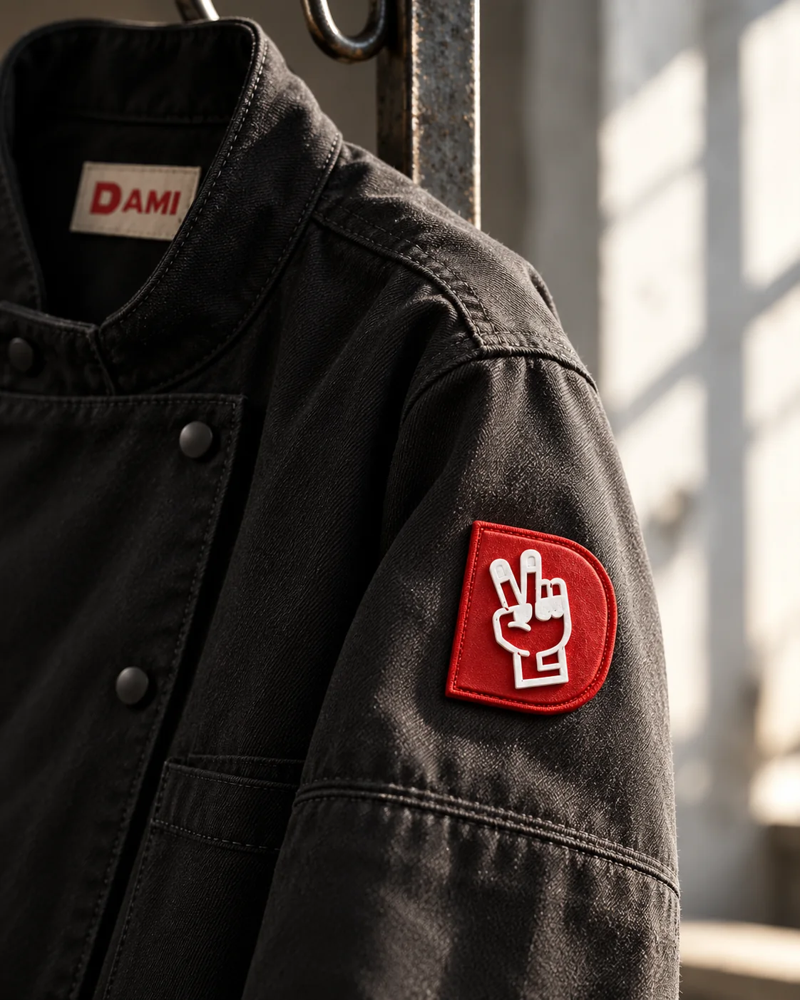
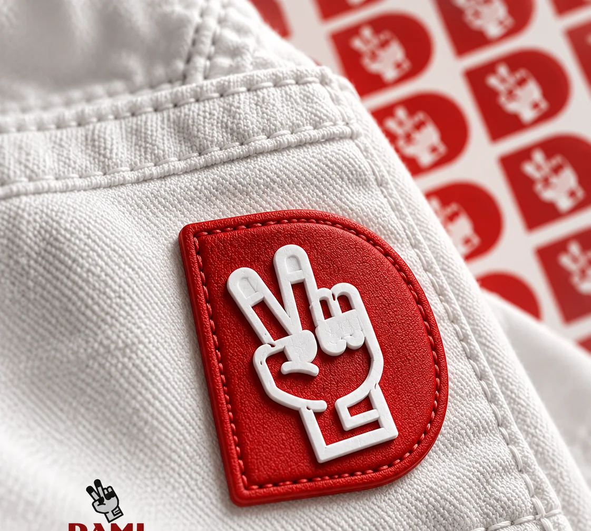
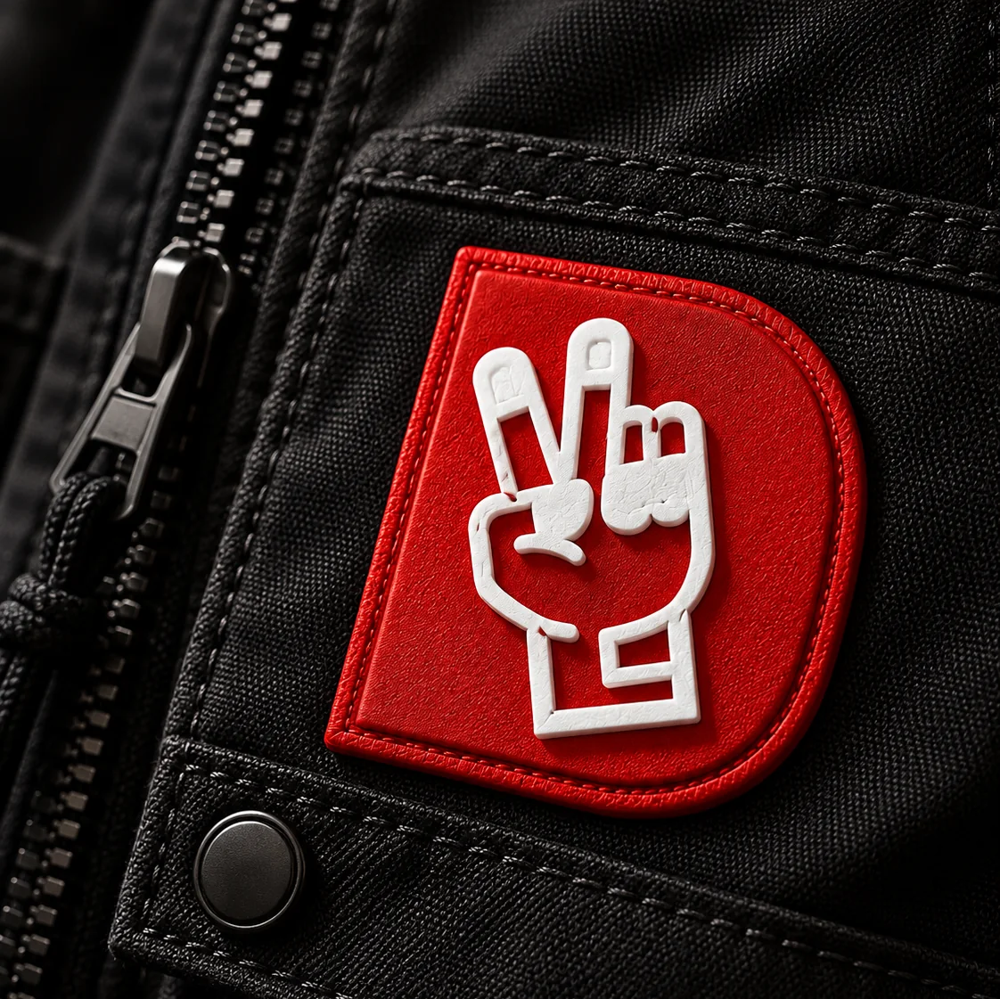
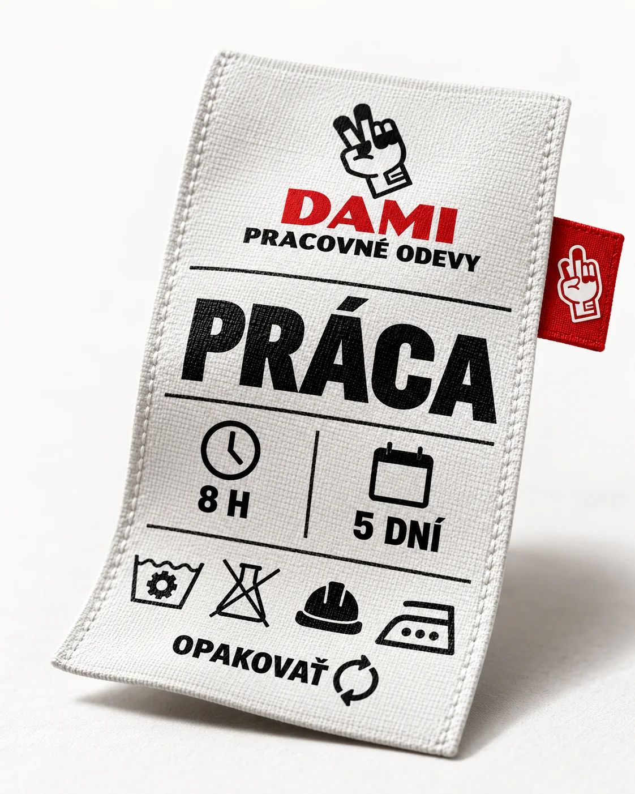
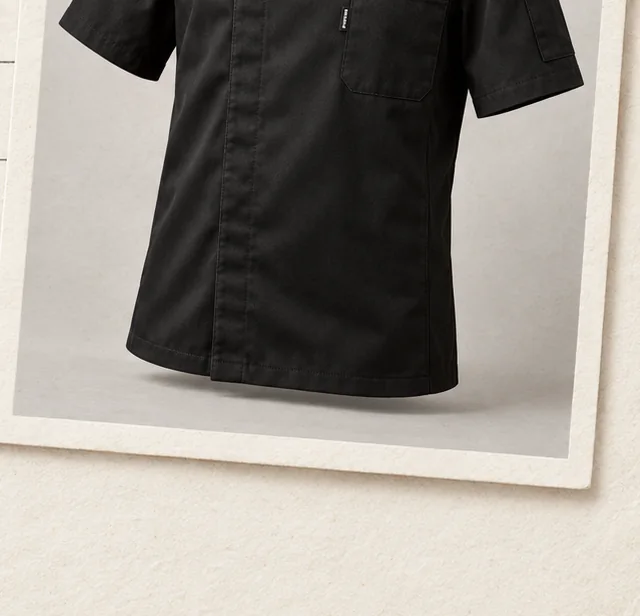
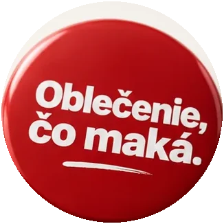
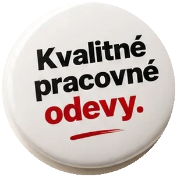
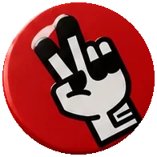

Banner „Vlastná výroba“ · 10 variantov
Všetko z vašich vlastných vizuálov z brand manuálu DAMI. Text a odkaz sú ako na webe. Vyber číslo a nasadím ho na úvod.
V1 Fotka cez celú šírku

Vlastná výroba kuchárskych nohavíc a záster.
Kvalitné materiály. Poctivé šitie. Profesionálny strih.
Viac o výrobeAsset: dami_znacka_12_rondon-s-nasivkou.png
V2 Nášivka vyčnieva z rámu
Asset: v2/img/d-patch.webp (nášivka D)
V3 Vzor rúk a biela karta
Vlastná výroba kuchárskych nohavíc a záster.
Kvalitné materiály. Poctivé šitie. Profesionálny strih.
Viac o výrobeAsset: v2/img/hand-white.png (ruka DAMI ako vzor)
V4 Pás troch vizuálov
Vlastná výroba kuchárskych nohavíc a záster.
Kvalitné materiály. Poctivé šitie. Profesionálny strih.
Viac o výrobe


Assety: dami_znacka_13_bunda-s-nasivkou, dami_vizual_14_maly-detail-biela-nasivka, dami_znacka_08_detail-ktory-vydrzi-v2 (orezané bez textu)
V5 Čierna a červená, nášivka cez šev
Vlastná výroba kuchárskych nohavíc a záster.
Kvalitné materiály. Poctivé šitie. Profesionálny strih.
Viac o výrobešitie.
Asset: v2/img/d-patch.webp
V6 Etiketa
Vlastná výroba kuchárskych nohavíc a záster.

Asset: dami_smena_13_etiketa-praca.png
V7 Kartotéka
Vlastná výroba kuchárskych nohavíc a záster.
Viac o výrobe
Asset: dami_produkt_07_kartoteka-rondon.png (výrez rondonu)
V8 Nálepky a odznaky
Vlastná výroba kuchárskych nohavíc a záster.
Kvalitné materiály. Poctivé šitie. Profesionálny strih.
Viac o výrobe


Assety: dami_merch_06_placky-a-nalepky.png (vystrihnuté odznaky) + v2/img/d-patch.webp
V9 Veľká typografia
Vlastná výroba.
Kuchárske nohavice a zástery. Kvalitné materiály, poctivé šitie, profesionálny strih.
Viac o výrobeAsset: odznak z dami_merch_06_placky-a-nalepky.png
V10 Detail šitia a červený pás
Asset: dami_znacka_08_detail-ktory-vydrzi-v2.png (orezané bez textu)